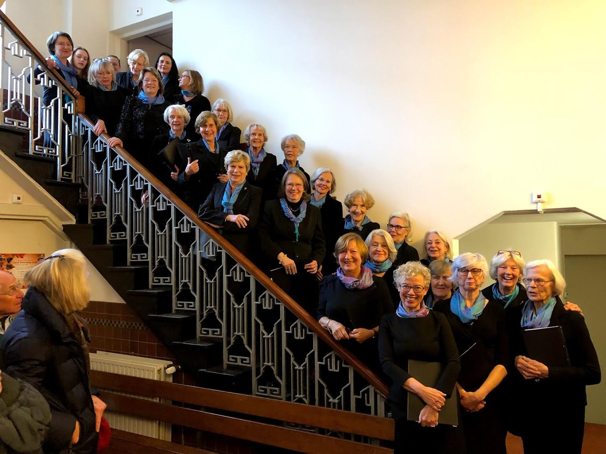

7 november 2026
Najaarsconcert
Semper Cantantes brengt een middag met muziek van Händel, Elgar en Mozart in het Termaat Huis in Rotterdam.
- Datum
- zaterdag 7 november 2026
- Tijd
- 14.30 uur, zaal open vanaf 14.00 uur
- Locatie
- Termaat Huis, 's-Gravenwetering 98, Rotterdam
- Kaarten
- € 15, contant aan de zaal

Programma
Händel, Elgar en Mozart
Een klassiek programma waarin koormuziek en solistische bijdragen elkaar afwisselen. Nadere informatie over de afzonderlijke werken wordt toegevoegd zodra het definitieve programmaboekje beschikbaar is.
Medewerkenden
Muzikale leiding en solisten
- Dirigent & sopraan
- Tessa Maalcke
- Piano
- Faina Ivanov-Aptekar
- Bariton
- Guyon Mingelen

Het koor
Semper Cantantes
Het Rotterdamse vrouwenkoor bestaat sinds 1957 en zingt klassieke wereldlijke en kerkelijke muziek onder leiding van Tessa Maalcke.
Meer over het koor